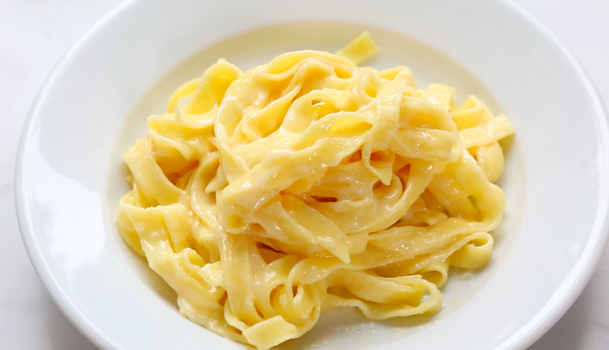

Fettuccine Alfredo

Ingredients
- 1 pound (450g) fettuccine pasta (fresh or dried)
- ½ pound (225g, or 2 sticks) unsalted butter, at room temperature, sliced
- ¾ to 1 cup (about 75–100g) finely grated Parmesan cheese (ideally Parmigiano Reggiano)
- Kosher salt, to taste
- Freshly ground black pepper, optional
Instructions
- Bring a large pot of salted water to a boil. Cook fettuccine until al dente (about 8–10 minutes for dried, 2 minutes for fresh).
- Reserve 1 cup of the pasta cooking water, then drain the pasta. Do not rinse the noodles.
- Return hot pasta to the pot (off the heat). Add the sliced butter, a small pinch of salt, and half the grated Parmesan cheese along with about ¼ cup of pasta water.
- Toss vigorously with tongs, adding more cheese and pasta water as needed until a creamy emulsified sauce forms that coats the noodles without clumps.
- Taste and adjust salt. Serve immediately on warmed plates, topped with more Parmesan and a sprinkle of black pepper if desired.
Tips
- Substitute ground turkey for beef, or add mushrooms for a vegetarian version.
- For extra flavor, sprinkle fresh basil or more parsley on top just before serving.
- Serve with garlic bread and salad for a complete meal.
Index